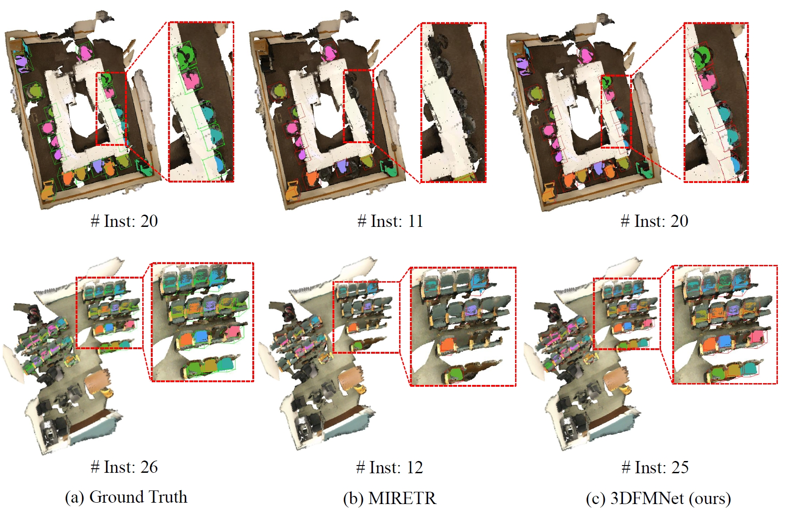
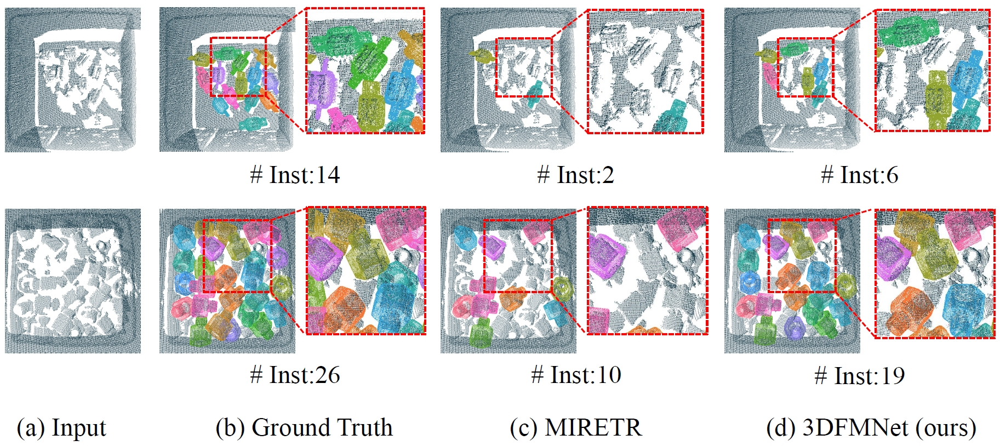

1Northwestern Polytechnical University
* denotes corresponding author
Multi-instance point cloud registration aims to estimate the pose of all instances of a model point cloud in the whole scene. Existing methods all adopt the strategy of first obtaining the global correspondence and then clustering to obtain the pose of each instance. However, due to the cluttered and occluded objects in the scene, it is difficult to obtain an accurate correspondence between the model point cloud and all instances in the scene. To this end, we propose a simple yet powerful 3D focusing-and-matching network for multi-instance point cloud registration by learning the multiple pair-wise point cloud registration. Specifically, we first present a 3D multi-object focusing module to locate the center of each object and generate object proposals. By using self-attention and cross-attention to associate the model point cloud with structurally similar objects, we can locate potential matching instances by regressing object centers. Then, we propose a 3D dual-masking instance matching module to estimate the pose between the model point cloud and each object proposal. It performs instance mask and overlap mask masks to accurately predict the pair-wise correspondence. Extensive experiments on two public benchmarks, Scan2CAD and ROBI, show that our method achieves a new state-of-the-art performance on the multi-instance point cloud registration task.
The framework of our 3D focusing-and-matching network for multi-instance pint cloud registration. Given the scene point cloud and the CAD model, we first present the 3D multi-object focusing module to localize the centers of the potential objects in the scene. Then, we design the 3D dual-masking instance matching module to learn pair-wise point cloud registration from the localized object proposals.
Qualitative comparisons between competing methods and our method on the Scan2CAD and ROBI dataset. The best results are highlighted in bold.
Quantitative comparison between our method and baseline on the Scan2CAD dataset.
Quantitative comparison between our method and baseline on the ROBI dataset.
@inproceedings{zhang20243dfmnet,
title={3D Focusing-and-Matching Network for Multi-Instance Point Cloud Registration},
author={Zhang, Liyuan and Hui, Le and Liu, Qi and Li, Bo and Dai, Yuchao},
booktitle={Proceedings of the Advances in Neural Information Processing Systems},
year={2024}
}